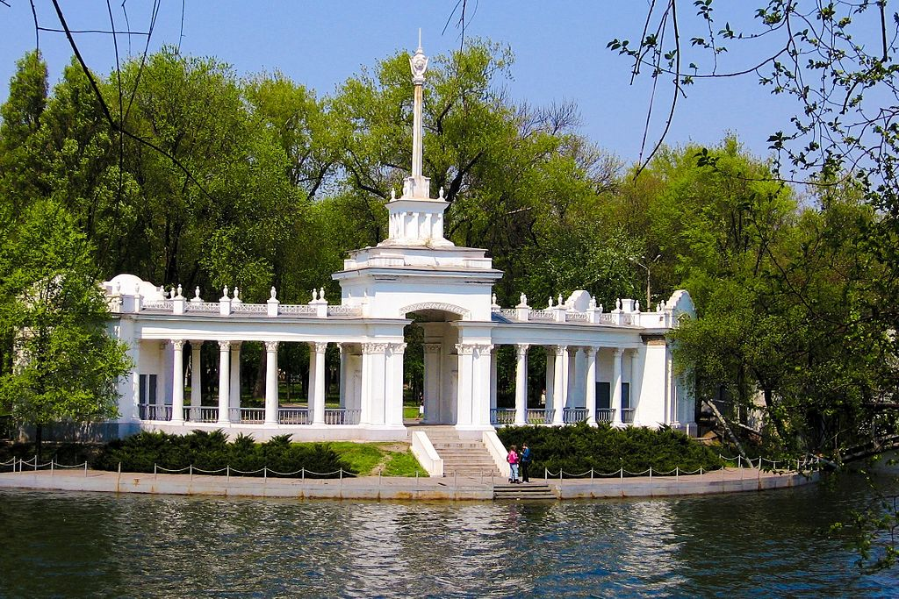

Кривой Рог – один из крупнейших экономических, промышленных и научных центров современной Украины. Он находится в Днепропетровской области, также известен как крупный транспортный узел и самый длинный город Европы: его протяженность с севера на юг – 126 км. Население Кривого Рога составляет 642 тысячи жителей, и этот показатель ставит его на 8-е место в стране.
Если бы Кривой Рог был значимым только с точки зрения экономики, промышленности и науки, то, наверное, он не представлял бы большого интереса для любителей путешествий. Однако туристы ежегодно приезжают сюда, и скучать им явно не приходится. В городе открыто много культурных и развлекательных заведений (одних только дворцов культуры – 18), есть три театра, постановки которых известны далеко за его пределами. В Кривом Роге проводятся престижные фестивали международного уровня: «Джаз и юность», «Маски», «Кубок Кривбасса», «Украина моя», «Горизонты джаза», «Серебряный источник» и многие другие. Благодаря этим мероприятиям не только вносится разнообразие в повседневную жизнь криворожан, но и обеспечивается постоянный приток туристов. Кроме этого, в городе есть свой историко-краеведческий музей, впечатляющий уникальными экспонатами. Немного огорчает, что в Кривом Роге практически отсутствуют архитектурные достопримечательности в традиционном понимании, но зато есть немало интересных мест, которые с лихвой их заменяют. В Кривом Роге, который с полным основанием можно назвать индустриальным мегаполисом регионального уровня, также имеется широкая сеть образовательных учреждений. Только различных ВУЗов первого и второго уровня аккредитации – техникумов, училищ, колледжей – насчитывается пятнадцать. Ещё четыре ВУЗа имеют третий и четвертый уровень аккредитации. Всего же в криворожских высших учебных заведениях обучается свыше 50 тысяч студентов. Нельзя не сказать и о том, что этот замечательный и по-своему самобытный город на Днепропетровщине очень зелен. Здесь насчитывается 23 парка, 17 садов, 11 набережных и 135 скверов, где можно погулять с семьей, подышать свежим воздухом и мечтать о том, чтобы когда-нибудь еще раз сюда вернуться.